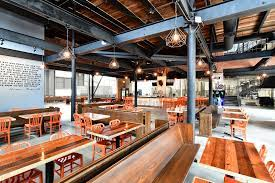

Experience
Work Experience
| The Brewing Projekt | Advertising Manager at UWEC's The Spectator Newspaper |
|---|---|
|

Assist with preparation, planning, coordination, and execution of 20+ events varying from 20-300 guests. Advance client satisfaction via administration of on-site service requests and logistics management, as well as review of contracts to ensure terms and conditions are acceptable. Organize event space, food and beverage selections, and audio-visual arrangements |
Develop relationships with potential newspaper ad purchasers and partners by making phone calls and visiting businesses. Track and assess newspaper site analytics through SNO Advertising. Collect information, assemble invoices, verify payments, and determine client needs |
| Tour Guide at The Jacob Leinenkugel Brewing Company | Tennis Instructor for Nike Tennis Camps at Carthage College |
|---|---|
|
Memorized a 1-hour long tour script to give tours of the brewery to groups of up to 20 guests to maintain a 4.9 tour guide rating. Assisted Direct to Customer Manager with fulfilling, packaging, and shipping merchandise, as well as taking inventory of various merchandise. Trained new guides to promote better understanding of information to present to guests |
Collaborated with staff and tennis professionals to sustain an active learning environemtn for camp participants aged 7-18 years old. Developed exercise and training programs to meet individual requirements of campers. Encouraged team members to become strong, more active athletes while also building a team atmosphere. |